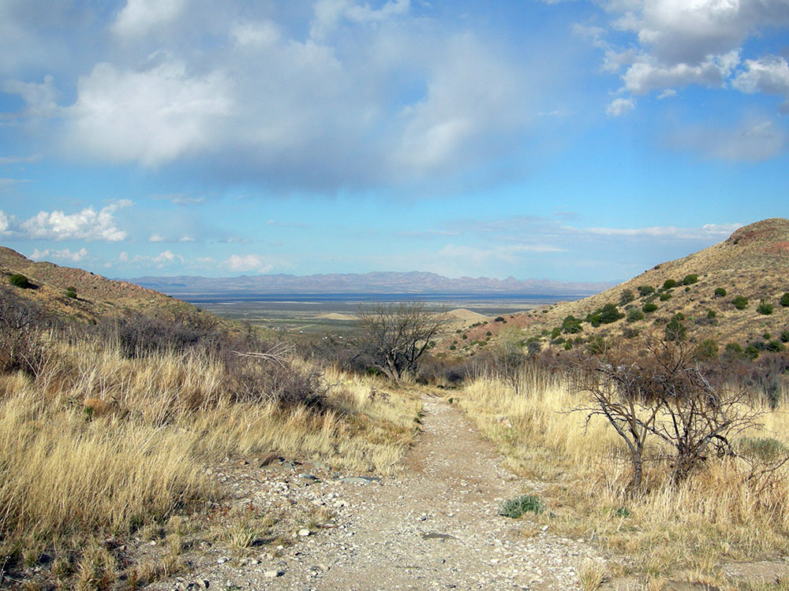

Historic military outpost accessible by trail, preserving ruins, cultural landmarks, and stories of conflict between the U.S. Army and Chiricahua Apache.
General Information
Visitor Center: Sunday and Monday, 8:30 AM – 4:00 PM
Closed: Tuesday to Saturday
No entrance pass required
Must be leashed (max 6 ft), not left unattended, and cleaned up after
How to Get There
From Tucson, AZ (120 mi): Take I-10 E to Bowie, exit at Apache Pass Rd, then drive to the trailhead and hike 1.5 miles to the historic site.
Overview
Fort Bowie National Historic Site preserves the adobe ruins of a 19th-century U.S. Army outpost at Apache Pass in the Chiricahua Mountains foothills of southeastern Arizona. Established in 1862 after the Battle of Apache Pass, the fort guarded a vital travel corridor and the reliable water source of Apache Spring, and it was the base for the Army's campaigns against the Chiricahua Apache, including the leaders Cochise and Geronimo. Fort Bowie was abandoned in 1894 after Geronimo's surrender and was designated a national historic site in 1964. It is distinctive because visitors reach the fort only on foot, by hiking 1.5 miles from the trailhead past Apache Spring, the Butterfield Overland Mail station site and a cemetery, and the experience feels remote and unchanged.
Access
The site is about 13 miles south of the town of Bowie and roughly 35 miles southeast of Willcox, reached by car on a paved and then graded dirt road. From I-10, take exit 362 at Bowie and follow Apache Pass Road south and east; the final miles are unpaved but passable for most vehicles in dry weather. The trailhead has parking, and the fort is 1.5 miles away on foot, which makes the visit a half-day outing. Services in the area are very limited, so bring water and snacks.
Seasons
The site is open daily to hikers during daylight hours, though the visitor center has limited hours and days, so check the National Park Service website. Late fall through early spring is the most comfortable time to hike, and February through April brings mild weather and wildflowers. Summers are hot, with the trail exposed, and monsoon thunderstorms from July through September can cause flash floods. Winter days are mild but nights can be cold, and the road may be rough after storms.
Things to Do
Discover a Key Site of Southwestern History
Fort Bowie National Historic Site preserves the location of the most important military post in the Apache Wars and tells the story of the complex relationships among the U.S. Army, the Chiricahua Apache people, and settlers in southeastern Arizona. Located in a remote desert valley between the Chiricahua and Dos Cabezas Mountains, the site offers visitors a combination of history, archaeology, and scenic desert landscapes.
Explore the Historic Fort Bowie Ruins
Visitors can walk through the remains of the original fort and view foundations, historic structures, and interpretive exhibits that explain the role Fort Bowie played during the Apache Wars. The site provides insight into military life on the frontier and the events that shaped the American Southwest during the nineteenth century.
Learn About Cochise and the Chiricahua Apache
Fort Bowie was closely connected to the history of Cochise, one of the most influential Chiricahua Apache leaders. Interpretive exhibits and ranger information help visitors understand the Apache perspective, the conflicts that occurred in the region, and the lasting cultural significance of the area.
Visit Apache Pass and Apache Spring
Apache Pass served as one of the most important travel corridors in the Southwest because of Apache Spring, a reliable water source in an otherwise arid landscape. Visitors can see the spring area and learn how control of this vital resource influenced military and cultural history.
Explore the Visitor Center Museum
The visitor center features exhibits, artifacts, photographs, maps, and historical information about the Apache Wars, frontier military operations, regional geology, and the people who once traveled through Apache Pass.
Enjoy Wildlife Viewing and Desert Scenery
The surrounding landscape supports desert wildlife such as mule deer, javelina, coyotes, hawks, and numerous bird species. The remote location also offers excellent opportunities for photography, birdwatching, and enjoying Arizona's high-desert environment.
Top Trails
Fort Bowie Historic Trail
Length: Approximately 3 miles round trip
Elevation Gain: Moderate
Difficulty: Moderate
This is the primary route into the historic site and begins at the trailhead near Apache Pass. Along the hike, visitors pass Apache Spring, historic cemeteries, ruins, interpretive exhibits, and scenic viewpoints before reaching the fort itself.
Apache Pass Trail
Length: Approximately 1.5 miles one way
Elevation Gain: Moderate
Difficulty: Moderate
Following the historic transportation corridor through Apache Pass, this trail allows visitors to experience the route used by Native Americans, soldiers, stagecoaches, and settlers moving through southeastern Arizona.
Butterfield Overland Mail Route Walk
Length: Approximately 1 mile round trip
Elevation Gain: Minimal
Difficulty: Easy
Visitors can explore portions of the historic Butterfield Overland Mail route and learn about early transportation networks that connected the American West before the arrival of railroads.
Visitor Center to Cemetery Walk
Length: Approximately 0.5 miles round trip
Elevation Gain: Minimal
Difficulty: Easy
This short walk visits the historic post cemetery and provides insight into frontier life, military service, and the challenges faced by people living in the remote Southwest during the nineteenth century.
Visitor Centers
The Fort Bowie Visitor Center is located at the fort ruins, at the end of the 1.5-mile trail, and has exhibits on the Apache Wars, the Butterfield Overland Mail and the history of Apache Pass, along with a bookstore and restrooms. Trail information is posted at the trailhead. The visitor center keeps limited hours and may be staffed only on certain days, so confirm with the National Park Service before you go.
Camping and Lodging
There is no camping or lodging at the site. Hotels, motels and restaurants are in Willcox, about 45 minutes away, and the small town of Bowie has limited services. Benson and Sierra Vista offer more lodging about an hour away. Camping is available at Chiricahua National Monument's Bonita Canyon Campground and at Coronado National Forest campgrounds in the Chiricahua Mountains. Check each property's website for current availability.
Sources: National Park Service official Fort Bowie National Historic Site information, including details on Apache Pass, Fort Bowie history, Cochise, the Chiricahua Apache, hiking trails, visitor facilities, and interpretive programs.
https://www.nps.gov/fobo/index.htmhttps://www.nps.gov/fobo/index.htm
Additional information verified through National Park Service visitor resources covering the Fort Bowie Historic Trail, Apache Spring, Butterfield Overland Mail Route, archaeological resources, military history, and cultural heritage preserved at Fort Bowie National Historic Site.
https://www.nps.gov/fobo/planyourvisit/index.htmhttps://www.nps.gov/fobo/planyourvisit/index.htm Additional information from the National Park Service.
This article uses material from the Wikipedia article "Fort Bowie", and "Apache Pass", which is released under the Creative Commons Attribution-Share-Alike License 3.0
